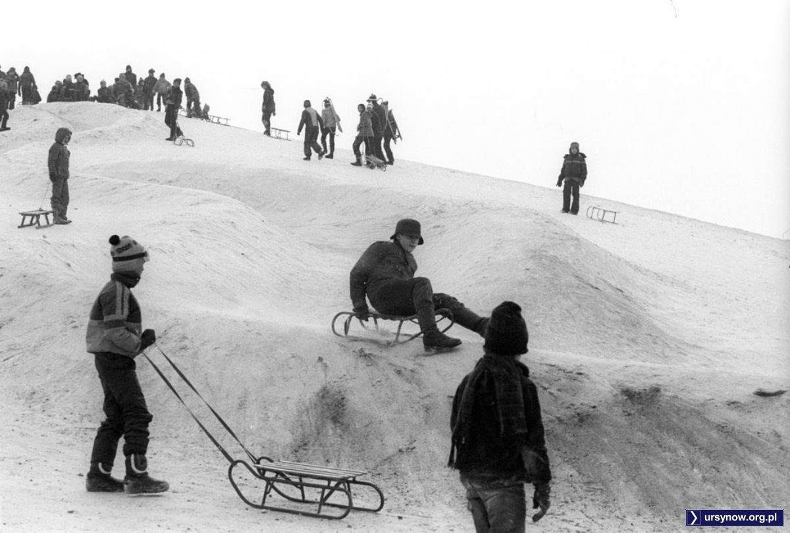

Kopa Cwila (lub Kopiec Cwila) jest sztucznym wzniesieniem i najwyższym szczytem Ursynowa. Znajduje się ona w Parku im. Romana Kozłowskiego.
Ursynów został zbudowany w latach 70, w dużym stopniu od zera. W 1971 roku odbył się konkurs na projekt dzielnicy. Konkurs wygrał zespół Marka Budzyńskiego. Architekci mieli plan, żeby dzielnica była jednym wielkim parkiem, a bloki były w dużym oddaleniu od siebie.
Po budowie tak dużej ilości bloków zostaje bardzo dużo ziemi, którą z początku wywożono na Bemowo, było to jednak bardzo nieopłacalne, ze względu na wykorzystywaną ilość czasu i benzyny. W 1975 Inż. Henryk Cwil wpadł na pomysł, żeby w miejscu, które było przeznaczone na tereny zielone, utworzyć wzniesienie. Podobnie powstało wiele mniejszych i większych górek na terenie całego Ursynowa. To, jak Kopa Cwila wyglądała na początku swojego istnienia, widać na teledysku Oddziału Zamkniętego "Ten Wasz Świat".
W latach 80 na górce postanowiono zbudować wyciąg narciarski i trasę saneczkową. Po wyciągu pozostały już tylko fundamenty.
Dzisiaj górka jest częścią parku, a zimą, jeśli jest śnieg dzieci zjeżdżają z niej na sankach.

Z Kopy Cwila rozciąga się całkiem ładny widok.